Três Lagoas
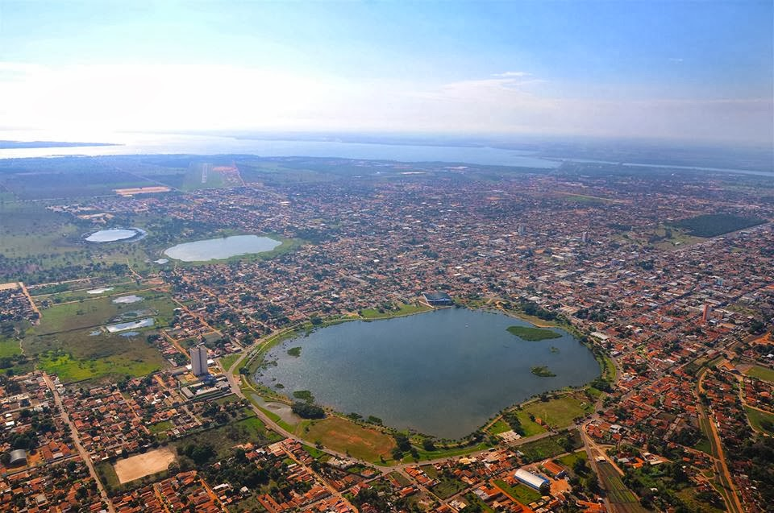Três Lagoas, localizada no estado de Mato Grosso do Sul, é uma cidade com grande relevância econômica e turística na região Centro-Oeste do Brasil. Conhecida por sua infraestrutura em termos de indústrias e pelo seu papel como polo regional, Três Lagoas também é reconhecida por sua beleza natural, especialmente em relação aos rios e lagos que a cercam. A cidade é um ponto de passagem para os turistas que desejam explorar a região do Pantanal, além de ser um excelente destino para quem gosta de ecoturismo, pesca, passeios aquáticos e contato com a natureza. O município tem investido na valorização de seu potencial turístico, oferecendo atividades que atraem visitantes durante todo o ano.
Principais pontos turísticos
- Lagoa Maior 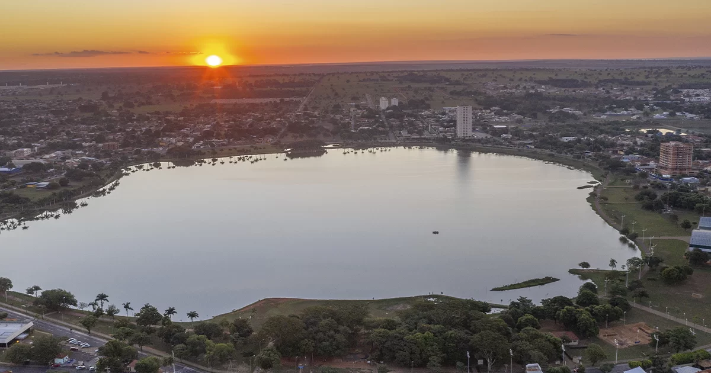
- Parque Nacional de Ilha Grande 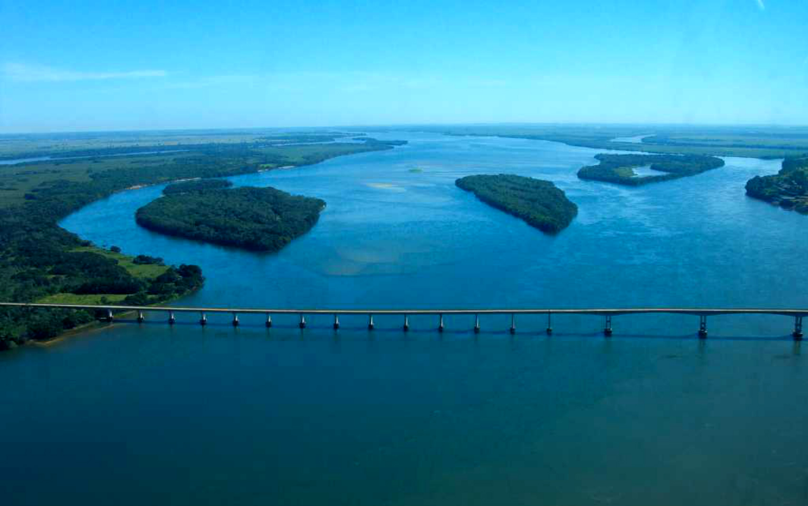
- Balneário Municipal Miguel Jorge Tabox 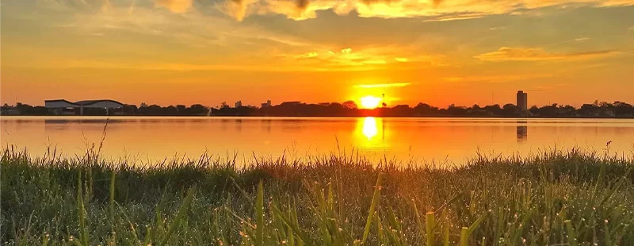
- Prainha do Jupiá 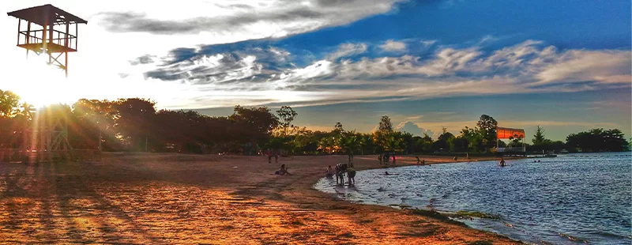
- Casa do Artesão 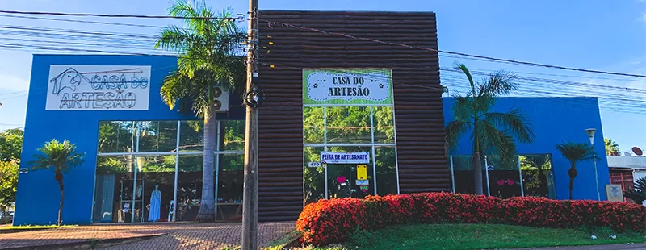
A Lagoa Maior é o principal ponto turístico da cidade e uma das maiores atrações naturais de Três Lagoas. Este lago de águas claras é rodeado por áreas de lazer, como pistas de caminhada, ciclovias e quiosques. É um excelente local para passeios de barco, pescarias e caminhadas ao redor da água.
A Lagoa Maior é um lugar perfeito para quem busca tranquilidade e contato com a natureza, além de ser um dos cartões postais da cidade. O local também é ideal para famílias e turistas que gostam de atividades ao ar livre, como a prática de esportes náuticos e o simples lazer à beira d'água.
O Parque Nacional de Ilha Grande é uma unidade de conservação que abriga uma vasta área de vegetação nativa e rica biodiversidade. O parque é um destino perfeito para os amantes do ecoturismo, oferecendo trilhas, passeios de barco e observação de fauna e flora.
Este parque é uma das maiores áreas de preservação de ecossistemas do estado, sendo um ponto de interesse para quem busca aventura, tranquilidade e contato profundo com a natureza, especialmente em atividades como a observação de aves e a pesca esportiva.
À beira do Rio Sucuriú, o balneário possui uma estrutura com espaço para banho, quiosques, duchas, quadras poliesportivas, parque infantil e muito mais.
O local, inclusive, é palco da queima de fogos na virada de ano, com direito a shows ao vivo sendo ideal para toda a família.
Com águas do Rio Paraná apropriadas para banho, o Jupiá tem opções de passeios de barco e pesca, além de restaurantes onde há o preparo dos pescados no próprio local. Ou seja, o visitante pode adquirir o peixe que quer que seja preparado para consumo no próprio local.
O lugar para encontrar os melhores souvenirs para guardar recordações do Mato Grosso do Sul. Na Casa do Artesão, é possível encontrar peças de cerâmica e madeira, coloridas ou não, que representam elementos da fauna pantanense.
Principais pontos gastronômicos
- Restaurante do Kadu 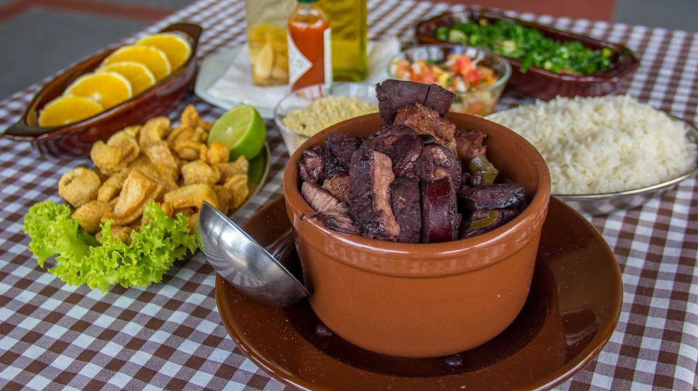
- Localização: Santos Dumont.
- Varandão Felicità Pizzaria & Restaurante 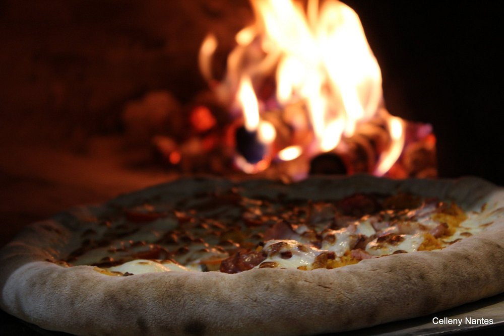
- Localização: Jardim dos Ipês.
- Beer Prosaz 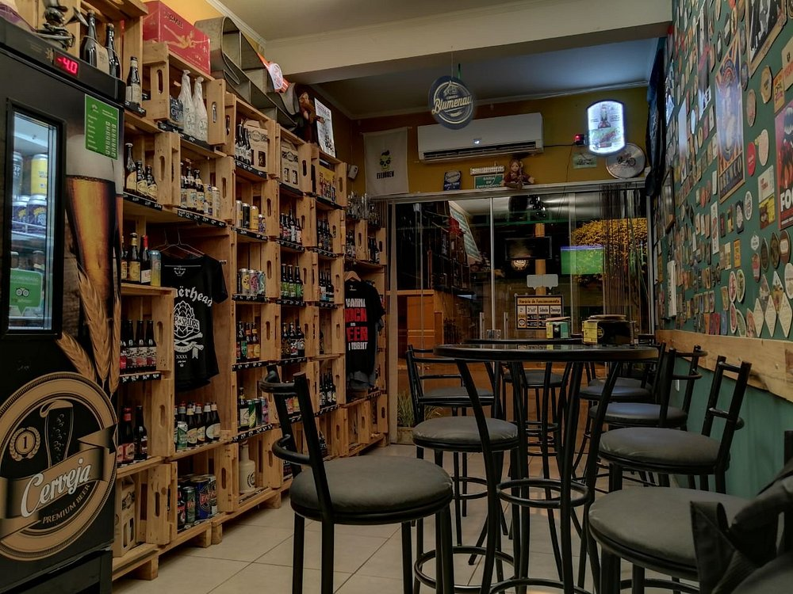
- Localização: Centro da cidade.
- Restaurante das Águas 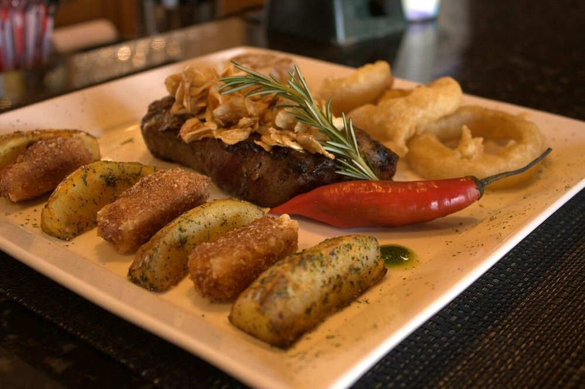
- Localização: Hotel OT.
Um ambiente familiar e com os melhores pratos da região. Conheça o Restaurante do Kadu e tenha uma experiência inesquecível. Nosso ambiente climatizado e aconchegante é perfeito para um jantar sozinho, um encontro, ou entre amigos.
O Restaurante do Kadu possui pratos típicos brasileiros, que vão desde a tradicional feijoada até os melhores cortes de churrasco.
Varandão Felicità Pizzaria é um ótimo lugar para jantar com sua família, conversar com amigos ou fazer um happhour depois do trabalho. Nossas pizzas são feitas com ingredientes selecionados.
Loja de cervejas artesanais com opção de se degustar in loco. Carta de cervejas sempre variando em torno de 160 rótulos (nacionais e importados). Todas as quartas, parceria com Food Truck "O Porcão" com lanches artesanais. Todas as sextas, parceria com o "Cantim Minêro", com o lanche Buraco Quente. Todos os outros dias, armonizações com queijos e salames também do "Cantim Minêro".
Espaço familiar, limpo, sempre com boa música (blues / jazz / rock / mpb). Os proprietários são os atendentes.
O Restaurante das Águas é anexado ao Hotel OT. Possui ambiente amplo e aconchegante. Passui atendimento para café da manhã, almoço, jantar, brunch e drinks.
O restaurante das Águas possui um amplo cardápio, sendo também adequado para vegetarianos.
Principais pontos culturais
- Festival de Música de Três Lagoas 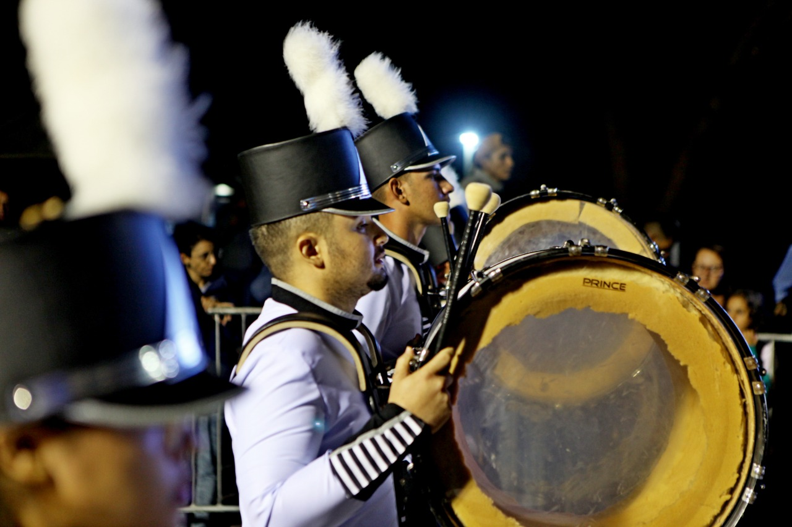
- Festa de Nossa Senhora Aparecida
- Localização: Centro da cidade.
- Igreja Santo Antônio 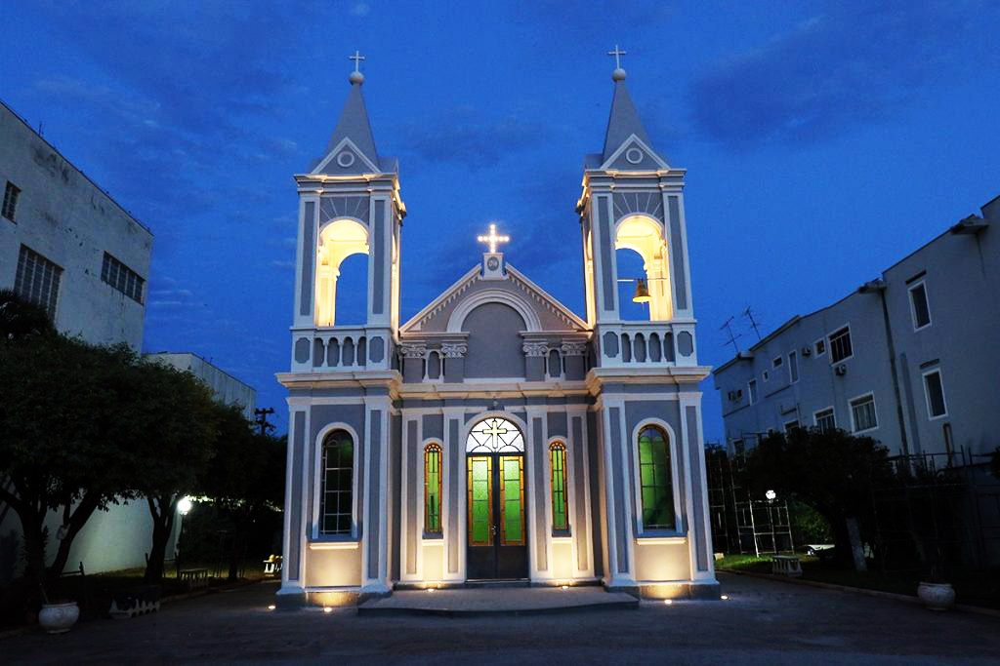
- Localização: Centro da cidade.
A cidade realiza um importante festival de música que atrai artistas locais e de outras partes do Brasil. O evento é um reflexo da rica cena musical da cidade, que vai desde o sertanejo até o rock e a música popular brasileira.
O Festival de Música de Três Lagoas é uma oportunidade para vivenciar a música local e conhecer novos talentos, além de ser uma plataforma de divulgação cultural e artística da cidade.
A cidade realiza diversas festividades religiosas, como a Festa de Nossa Senhora Aparecida, padroeira de Três Lagoas, que reúne a comunidade em celebrações de fé e cultura.
As festividades religiosas são momentos importantes para os habitantes de Três Lagoas e oferecem aos turistas a chance de conhecer mais sobre as crenças e tradições locais.
A Igreja Santo Antônio ou Igrejinha Santo Antônio, é um monumento arquitetônico da cidade brasileira de Três Lagoas. Foi construída no ano de 1914 por Antônio Trajano dos Santos, um dos fundadores da cidade, e localiza-se na avenida que recebe o nome dele. Santo Antônio, por sua vez, era o santo de devoção de Antônio Trajano e se tornou o padroeiro de Três Lagoas. Ainda na década de 1910, foi construída a praça da igreja pela comunidade portuguesa da cidade.
Na história de mais de 110 anos de Três Lagoas, a Igreja de Santo Antônio é um marco histórico e turístico da cidade.